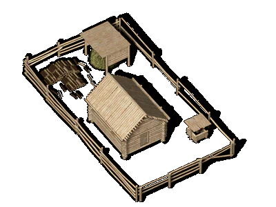

 |
Семья |
| У восточно-славянских
народов была большая семья, объединявшая
родственников по прямой и по боковым линиям.
Отличительными чертами большой семьи были общее
хозяйство и потребление, общая собственность на
двор и другое имущество. Обычно в общую семью
входили две и более брачных пар. У восточных
славян были различные наименования общей семьи:
дом, двор, дворище, изба и печище. Возглавлял большую семью обычно старейший по возрасту и положению в семье мужчина -- он обладал патриархальной властью над другими членами семьи. Его называли «большаком», «наибольшим», «старшим». Основноей его задачей было управление хозяйственной деятельностью семьи и трудом ее взрослых членов, главным образом мужчин. В некоторых вопросах его власть была ограничена -- например, в вопросах брака молодых членов семьи, при решении которых он считался с мнением всей семьи, а также в вопросах распоряжения семейным имуществом, которое принадлежало всей семье вцелом. Со смертью главы такой семьи его права переходили к наследнику, которым мог быть либо брат умершего, либо его старший сын. Наряду с большаком семью возглавляла и старшая женщина семьи -- «большуха», «старшая». В ее ведении было все домашнее хозяйство, которое вели женщины, была она и советницей в делах своего мужа. Как правило, большак и большуха выполняли свои функции пожизненно. Вся жизнь членов семьи была регламентирована традициями, у каждого из них был четко ограниченный круг обязанностей. За их выполнением следил глава семьи, который в случае неповиновения мог применить соответствующие меры наказания. Если возникали разногласия, грозившие развалом семьи или членовредительством, то это выносилось на обсуждение в общину. Женщина в семье обладала лишь тем имуществом, которое ей досталось в наследство, и своим приданным, полученным при замужестве. Из общесемейных средств на нужды снох и их детей ничего не тратилось, а в случае смерти женщины ее приданное либо возвращалось обратно родителям, либо переходило к ее дочери. Овдовевшие женщины, за исключением большухи, имущество мужа не наследовали. Для большой семьи было характерно примачество - когда при отсутствии сыновей принимали в дом зятя (приманка). Наиболее обездоленными членами семьи были родственники-сироты, особенно по боковой линии. В XII веке у восточных слаян возникла еще одна новая форма общенной организации - вервь, которая существовала в это время наряду с большой семьей. Вервь образовывалась в результате разрастания и затем разъединения одной большой патриар-хальной семьи. Она представляла собой сельскую общину, общественно-территориальную единицу, члены которой (большие и малые семьи) вели свое индивидуальное хозяйство и несли свои повинности перед государственной властью с «дыма», «рала» или «плуга». Вервь отличалась коллективным владением и пользованием земельными и рыболовными угодьями и выгонами, однако потребление произведенных продуктов было поселейным. Вервь имела свою систему самоуправления, во главе которой стояли специальные «выборные». |
Текст и
иллюстрации (c) 1997 Snowball Interactive Entertainment, Inc. |